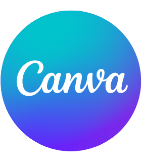

my skills
html
css
javascript
Figma
Python

years of experience
project completed
Saya bertugas dalam mengelolah dan mempublikasikan konten di sosial media, secara khusus bagian website dan Instagram. Saya juga yang mengontrol situs website dari Sola Gracia Communities Link Website Sola Gracia Communities(SGC): http://www.sgcfamily.org/
Saya bertugas sebagai kordinator dalam tim media Sola Gracia Communities untuk mengatur mengelola akun social media dari sisi konten secara keseluruhan bersama para anggota tim lainnya. Detail tugas yang dilakukan diantaranya mulai dari merencanakan konten yang akan ditayangkan, menentukan jadwal tayang kontennya, menganalisa konten yang sudah dipublikasikan, hingga menjawab semua pertanyaan/komentar/keluhan yang datang dari para pengikut/followers.
I was awarded "The Best Ambassador" award at the time for successfully inviting people into our community more than the target requested
Saya membuat beberapa website dan juga design UI untuk keperluan tugas kuliah ataupun projek mandiri
Saya beserta tim saya mengikuti sebuah lomba yang diselenggarakan oleh sebuah universitas dengan jenis lomba UI/UX dengan temah kesehatan. Nama Aplikasi yang kami buat adalah Sahabat Jiwa
Saya bertugas membatu pelaksanaan pelajaran Web Dev dan APSI pada bagian Prakteknya